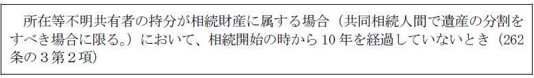
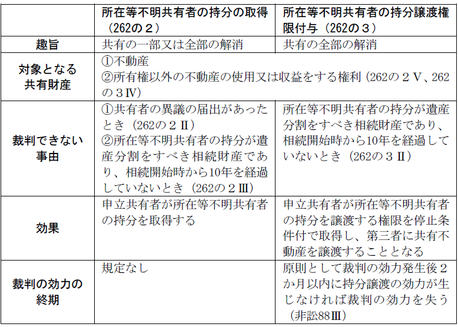

第２編 物権
第３章 所有権
第４節 共有
Ⅱ 共有関係の解消
1. 総説
共有者の中に所在等不明共有者がいる場合に、共有関係を解消するための手段として、所在等不明共有者の持分の取得の制度及び所在等不明共有者の持分の譲渡の制度が創設された。これにより、共有物分割訴訟以外の方法による共有関係の解消ができることとなる。
2. 所在等不明共有者の持分の取得の制度（262条の２）
(1) 意義
不動産が数人の共有に属する場合において、共有者が他の共有者を知ることができず、又はその所在を知ることができないときは、裁判所は、共有者の請求により、その共有者に、当該他の共有者（以下「所在等不明共有者」という。）の持分を取得させる旨の裁判をすることができる（262条の２第１項前段）。所在等不明共有者をキャッシュアウトさせる制度である。
(2) 要件
所在等不明共有者の持分を他の共有者に取得させる旨の裁判をするには、以下の要件を満たさなければならない。
(a) 不動産が数人の共有に属すること
通常共有のみならず、遺産共有状態も含む。もっとも、遺産共有持分の取得の場合、相続開始の時から10年経過していることが要件となる（262条の２第３項）。
(b) 共有者が他の共有者を知ることができず、又はその所在を知ることができないときであること
この要件に該当するかどうかは、事案に応じて裁判所が判断することとなる。
(c) 共有者が申立てをすること
(d) 裁判所による公告・通知の手続がなされること（非訟事件手続法87条２項、同条３項）
(e) 申立人である共有者が裁判所が定める額の供託金を供託し、かつその旨を届け出ること（非訟事件手続法87条５項）
申立人が供託金を供託しない場合には、申立ては却下される（非訟事件手続法87条８項）。
なお、以下の場合には当該裁判をすることができない。
①262条の２第１項の請求があった持分に係る不動産について共有物分割請求（258条１項）又は遺産の分割の請求があり、かつ、所在等不明共有者以外の共有者が所在等不明共有者の持分の取得の請求を受けた裁判所に当該裁判をすることについて異議がある旨の届出をしたとき（262条の２第２項）
①は、所在等不明共有者の持分を含め、裁判による共有物分割や遺産分割の手続を希望する共有者がいる場合には、それらの手続を優先させる趣旨である。
②所在等不明共有者の持分が相続財産に属する場合（共同相続人間で遺産の分割をすべき場合に限る。）において、相続開始の時から10年を経過していないとき（262条の２第３項）
②は、このような場合に所在等不明共有者の持分取得制度を利用し、所在等不明共有者の持分を他の共有者が取得すると、当該持分権について所在等不明共有者の相続人の遺産分割上の権利が失われることを考慮したものである。
(3) 効果
(a) 申立人である共有者への持分移転
裁判所の持分取得決定により、請求をした共有者は、所在等不明共有者の持分を取得する（262条の２第１項前段）。請求をした共有者が2人以上あるときは、請求をした各共有者に対し、所在等不明共有者の持分を、請求をした各共有者の持分の割合で按分してそれぞれ取得させる（262条の２第１項後段）。
(b) 所在等不明共有者の時価相当額請求権
所在等不明共有者は、持分を取得した共有者に対し、当該共有者が取得した持分の時価相当額の支払を請求することができる（262条の２第４項）。また、手続法上の効果として、所在等不明共有者は、他の共有者が供託した供託金の還付を受けることができる。
3. 所在等不明共有者の持分譲渡権限付与制度
(1) 意義
不動産が数人の共有に属する場合において、共有者が他の共有者を知ることができず、又はその所在を知ることができないときは、裁判所は、共有者の請求により、その共有者に、当該他の共有者（以下「所在等不明共有者」という。）以外の共有者の全員が特定の者に対してその有する持分の全部を譲渡することを停止条件として所在等不明共有者の持分を当該特定の者に譲渡する権限を付与する旨の裁判をすることができる（262条の３第１項）。
旧法では、不動産の共有者の中に所在不明の者がいる場合に共有不動産の売却をするには、共有物分割訴訟や不在者財産管理人の選任等の手続を経る必要があったが、これらの手続を経ずに共有不動産を売却できるようにするために創設された規定である。
基本的には前記2.の持分取得制度と同様の規律を置いている。
(2) 要件
(a) 不動産が数人の共有に属すること
(b) 共有者が他の共有者を知ることができず、又はその所在を知ることができないときであること
(c) 共有者が申立てをすること
(d) 裁判所による公告の手続がなされること（非訟事件手続法88条２項、87条２項）
(e) 申立人である共有者が裁判所が定める額の供託金を供託し、かつその旨を届け出ること（非訟事件手続法88条２項、87条５項）
申立人が供託金を供託しない場合には、申立ては却下される（非訟事件手続法88条２項、87条８項）。
なお、以下の場合には当該裁判をすることができない（262条の３第２項）。

所在等不明共有者の持分の取得の制度で規定されている異議の届出に相当する規定はない（262条の２第２項、非訟事件手続法88条２項、前記2.⑵参照）。所在等不明共有者の持分譲渡権限付与制度は、不動産全部を第三者に譲渡することについて所在等不明共有者以外の共有者間に合意がある等の状況を前提としている制度だからである。
(3) 効果
(a) 申立人である共有者への持分譲渡権限の付与
裁判所の持分譲渡権限付与決定により、請求をした共有者に、所在等不明共有者以外の共有者の全員が特定の者に対してその有する持分の全部を譲渡することを停止条件として所在等不明共有者の持分を譲渡する権限が付与される（262条の３第１項）。この決定により、共有不動産の譲渡の効力が生じるわけではない。
(b) 裁判の効力の終期
ⅰ 原則
所在等不明共有者の持分譲渡権限付与決定は、請求をした共有者が裁判の効力が生じた後２か月以内にその権限を行使しない場合には、その効力を失う（非訟事件手続法88条３項本文）。決定後、共有者が長期間に渡り譲渡をしないことを防ぐ趣旨である。
また、停止条件の成就（他の共有者全員の持分の譲渡の効力発生）も、この裁判の効力の終期までに完了させなければならない。
ⅱ 例外（期間の伸長）
裁判所が例外的に終期までの期間の伸長をする場合がある（非訟事件手続法88条３項ただし書）。
(c) 所在等不明共有者の時価相当額請求権
申立人である共有者が裁判により付与された権限に基づき所在等不明共有者の持分を第三者に譲渡したときは、所在等不明共有者は、当該譲渡をした共有者に対し、不動産の時価相当額を所在等不明共有者の持分に応じて按分して得た額の支払を請求することができる（262条の３第３項）。
(4) 譲渡の契約の方式
不動産の共有者にＡ、Ｂ及びＣがおり、Ａが所在等不明共有者で申立人である共有者Ｂに持分譲渡権限付与決定がなされた場合、共有不動産の譲渡は以下のようにすることとなる。
(a) 所在等不明共有者（Ａ）の持分の譲渡の方法
裁判所の持分譲渡権限付与決定により、申立人であるＢには、停止条件付でＡの持分を譲渡する権限が付与されるため（262条の３第１項）、ＢはＡの持分を第三者に移転させる特別の権限を有することになる。
Ａの持分の売買契約の当事者はＢと買主である点に注意が必要である。また、買主に対して登記義務や契約不適合責任を負うのは、所在等不明共有者Ａではなく、Ｂである。
(b) 所在等不明共有者以外の共有者（Ｂ及びＣ）の持分の譲渡の方法
Ｂ及びＣの持分の譲渡は、通常の売買契約と同じようにＢ及びＣが自己の持分の売主となり、第三者と売買契約を締結すればよい。また、ＢがＣの代理人となりＢ及びＣの持分を第三者に売却することもできる。
他の共有者の持分の譲渡は、持分譲渡権限付与決定の効力発生後２か月以内に効力が生じていなければならない。
【まとめ】

準共有とは、所有権以外の財産権を２人以上が有する場合をいう。原則として共有に関する規定が準用されるが、262条の２及び262条の３は除外されている（264条）。
第５節 所有者不明土地等の管理制度
1. 趣旨
近年、土地や建物の管理が放置され、周囲に悪影響を及ぼす事案が問題となっているが、所有者に是正を促そうとしても所有者が死亡し相続人がわからなかったり、所有者が不動産に関心がない等の理由から解決が困難となっている。不在者財産管理制度や相続財産管理制度はあるものの、これらは財産全体の管理をする制度であるため、管理費用が高くなることから、特定の不動産の管理には適していない。
そこで、特定の不動産の管理に特化した所有者不明土地（建物）管理制度が創設された。
2. 種類
所有者がわからない場合に利用できるものとして、所有者不明土地管理制度（264条の２第１項）と所有者不明建物管理制度（264条の8第１項）がある。
また、所有者は判明しているが適切な管理がなされていない不動産を対象とする管理不全土地管理制度（264条の９第１項）と管理不全建物管理制度（264条の14第１項）がある。
1. 意義
裁判所は、所有者を知ることができず、又はその所在を知ることができない土地（土地が数人の共有に属する場合にあっては、共有者を知ることができず、又はその所在を知ることができない土地の共有持分）について、必要があると認めるときは、利害関係人の請求により、その請求に係る土地又は共有持分を対象として、所有者不明土地管理人による管理を命ずる処分（以下「所有者不明土地管理命令」という。）をすることができる（264条の２第１項）。
2. 要件（264条の２第１項）
(1) 対象土地の所有者を知ることができず、又はその所在を知ることができないこと
所在等不明共有者の持分取得の制度等と同様、この要件に該当するかどうかは、事案に応じて裁判所が判断することとなる。
土地が数人の共有に属する場合には、対象土地の共有持分の共有者を知ることができず、又はその所在を知ることができないことである（264条の２第１項かっこ書）。
(2) 利害関係人の申立てがあること
利害関係人とは、所有者不明土地の管理に利害関係がある者をいう。事案ごとの判断となるが、以下の者は利害関係人に該当すると考えられる。
・土地の管理不全により不利益を受けるおそれのある隣地所有者
・一部の共有者不明の場合の他の共有者 等
(3) 管理人選任の必要があると裁判所が認めること
管理人に管理をさせる必要がない場合には、この要件を欠くため、申立ては却下されることになる。
3. 効果
(1) 管理命令の発令
要件を満たすと判断した場合、裁判所は所有者不明土地管理命令を発令する（264条の２第１項）。
(2) 管理人の選任
裁判所は、所有者不明土地管理命令をする場合には、当該所有者不明土地管理命令において、所有者不明土地管理人を選任しなければならない（264条の２第４項）。
(3) 効力の及ぶ範囲
所有者不明土地管理命令の効力は、当該所有者不明土地管理命令の対象とされた土地（共有持分を対象として所有者不明土地管理命令が発せられた場合にあっては、共有物である土地）にある動産（当該所有者不明土地管理命令の対象とされた土地の所有者又は共有持分を有する者が所有するものに限る。）に及ぶ（264条の２第２項）。
4. 所有者不明土地管理人
(1) 管理人の権限
(a) 管理及び処分権限
所有者不明土地管理人が選任された場合には、所有者不明土地管理命令の対象とされた土地又は共有持分及び所有者不明土地管理命令の効力が及ぶ動産並びにその管理、処分その他の事由により所有者不明土地管理人が得た財産（以下「所有者不明土地等」という。）の管理及び処分をする権利は、所有者不明土地管理人に専属する（264条の３第１項）。
「専属する」という文言から、管理人による処分行為の効力は否定されにくくなり、第三者との取引の安全性が保たれることになる。
(b) 裁判所の許可を要する行為
所有者不明土地管理人が次に掲げる行為の範囲を超える行為をするには、裁判所の許可を得なければならない（264条の３第２項本文）。逆にいえば、以下の行為には裁判所の許可は不要である。
ⅰ 保存行為
ⅱ 所有者不明土地等の性質を変えない範囲内において、その利用又は改良を目的とする行為
例えば、所有者不明土地の売却には許可を要する。
許可を要する行為を許可なく行った場合には、その行為は原則として無効となる。しかし、この許可がないことをもって善意の第三者に対抗することはできない（264条の３第２項ただし書）。管理人と取引をした相手方を保護する趣旨である。
(c) 訴訟に関する権限
所有者不明土地等に関する訴えについては、所有者不明土地管理人が原告又は被告となる（264条の４）。
(2) 管理人の義務
(a) 善管注意義務
所有者不明土地管理人は、所有者不明土地等の所有者（その共有持分を有する者を含む。）のために、善良な管理者の注意をもって、その権限を行使しなければならない（264条の５第１項）。
(b) 公平誠実義務
数人の者の共有持分を対象として所有者不明土地管理命令が発せられたときは、所有者不明土地管理人は、当該所有者不明土地管理命令の対象とされた共有持分を有する者全員のために、誠実かつ公平にその権限を行使しなければならない（264条の５第２項）。
(3) 解任・辞任
(a) 解任
所有者不明土地管理人がその任務に違反して所有者不明土地等に著しい損害を与えたことその他重要な事由があるときは、裁判所は、利害関係人の請求により、所有者不明土地管理人を解任することができる（264条の６第１項）。
(b) 辞任
所有者不明土地管理人は、正当な事由があるときは、裁判所の許可を得て、辞任することができる（264条の６第２項）。
(4) 報酬
所有者不明土地管理人は、所有者不明土地等から裁判所が定める額の費用の前払及び報酬を受けることができる（264条の７第１項）。
管理費用及び所有者不明土地管理人の報酬は、所有者不明土地等の所有者（その共有持分を有する者を含む。）の負担となる（264条の７第２項）。
1. 意義
裁判所は、所有者を知ることができず、又はその所在を知ることができない建物（建物が数人の共有に属する場合にあっては、共有者を知ることができず、又はその所在を知ることができない建物の共有持分）について、必要があると認めるときは、利害関係人の請求により、その請求に係る建物又は共有持分を対象として、所有者不明建物管理人による管理を命ずる処分（以下この条において「所有者不明建物管理命令」という。）をすることができる（264条の８第１項）。
所有者不明土地管理制度の規定をほぼ準用している（264条の８第５項）。
2. 所有者不明土地管理制度との相違点
(1) 効力の及ぶ範囲
所有者不明建物管理命令の効力は、当該所有者不明建物管理命令の対象とされた建物（共有持分を対象として所有者不明建物管理命令が発せられた場合にあっては、共有物である建物）にある動産（当該所有者不明建物管理命令の対象とされた建物の所有者又は共有持分を有する者が所有するものに限る。）及び「当該建物を所有し、又は当該建物の共有持分を有するための建物の敷地に関する権利（賃借権その他の使用及び収益を目的とする権利（所有権を除く。）であって、当該所有者不明建物管理命令の対象とされた建物の所有者又は共有持分を有する者が有するものに限る。）」に及ぶ（264条の８第２項）。
借地上にある建物に所有者不明建物管理命令が出たケースを想定し、適切な管理ができるよう、借地権に関する権限を認めたものである。
(2) 区分所有建物の適用除外
所有者不明建物管理制度の規定は、区分所有建物の専有部分及び共用部分には適用されない（区分所有法６条４項）。
1. 意義
裁判所は、所有者による土地の管理が不適当であることによって他人の権利又は法律上保護される利益が侵害され、又は侵害されるおそれがある場合において、必要があると認めるときは、利害関係人の請求により、当該土地を対象として、管理不全土地管理人による管理を命ずる処分（以下「管理不全土地管理命令」という。）をすることができる（264条の９第１項）。
所有者は判明しているが土地が管理されず、周囲に悪影響を及ぼす事例に対応するための制度である。
2. 要件（264条の９第１項）
(1) 所有者による土地の管理が不適当であることによって他人の権利又は法律上保護される利益が侵害され、又は侵害されるおそれがある場合
「管理が不適当」とは、全く管理していない場合はもちろん、管理はしているがそれが適切でない場合も含む。所有者の使用形態や所有者の意見が重要な判断要素となるとされる。
管理の不適当と侵害状態には因果関係を要する（「よって」の文言から）。
所有者不明土地管理制度と異なり、共有持分を対象として発することはできない。
(2) 利害関係人の申立てがあること
利害関係人とは、管理不全土地の管理に利害関係がある者をいう。
(3) 管理人選任の必要があると裁判所が認めること
3. 効果
(1) 管理命令の発令
要件を満たすと判断した場合、裁判所は管理不全土地管理命令を発令する（264条の９第１項）。
(2) 管理人の選任
裁判所は、管理不全土地管理命令をする場合には、当該管理不全土地管理命令において、管理不全土地管理人を選任しなければならない（264条の９第３項）。
(3) 効力の及ぶ範囲
管理不全土地管理命令の効力は、当該管理不全土地管理命令の対象とされた土地にある動産（当該管理不全土地管理命令の対象とされた土地の所有者又はその共有持分を有する者が所有するものに限る。）に及ぶ（264条の９第２項）。
4. 管理不全土地管理人
(1) 管理人の権限
(a) 管理及び処分権限
管理不全土地管理人は、管理不全土地管理命令の対象とされた土地及び管理不全土地管理命令の効力が及ぶ動産並びにその管理、処分その他の事由により管理不全土地管理人が得た財産（以下「管理不全土地等」という。）の管理及び処分をする権限を有する（264条の10第１項）。
もっとも、所有者不明土地管理命令と違って、対象土地の所有者の管理処分権は制限されない点に注意を要する。
(b) 裁判所の許可を要する行為
管理不全土地管理人が次に掲げる行為の範囲を超える行為をするには、裁判所の許可を得なければならない（264条の10第２項柱書本文）。
ⅰ 保存行為
ⅱ 管理不全土地等の性質を変えない範囲内において、その利用又は改良を目的とする行為
許可を要する行為を許可なく行った場合には、その行為の効力は所有者に及ばない。しかし、この許可がないことをもって善意無過失の第三者に対抗することはできない（264条の10第２項柱書ただし書）。管理人と取引をした相手方を保護する趣旨である。
所有者への配慮から、取引の相手方の保護要件が所有者不明土地管理制度の場合よりも厳しくなっている。
管理不全土地管理命令の対象とされた土地の処分についての裁判所の許可をするには、その所有者の同意がなければならない（264条の10第３項）。
(2) 管理人の義務
管理不全土地管理人にも、所有者不明土地管理人と同様に善管注意義務及び公平誠実義務が課される（264条の11）。
(3) 解任・辞任
管理不全土地管理人の解任事由及び辞任の要件も、所有者不明土地管理人と同じである（264条の12）。
(4) 報酬
管理不全土地管理人は、管理不全土地等から裁判所が定める額の費用の前払及び報酬を受けることができる（264条の13第１項）。
管理不全土地等の管理に必要な費用及び報酬は、管理不全土地等の所有者の負担となる（264条の13第２項）。
1. 意義
裁判所は、所有者による建物の管理が不適当であることによって他人の権利又は法律上保護される利益が侵害され、又は侵害されるおそれがある場合において、必要があると認めるときは、利害関係人の請求により、当該建物を対象として、管理不全建物管理人による管理を命ずる処分（以下「管理不全建物管理命令」という。）をすることができる（264条の14第１項）。
管理不全土地管理制度の規定をほぼ準用している（264条の14第４項）。